Eğitim Süreçlerinde Uçtan Uca Dijital Dönüşüm, Kurumsal Standartlaşma, Mobil Yoklama Ergonomisi ve Canlı Denetim Platformu (MEFPORTAL)
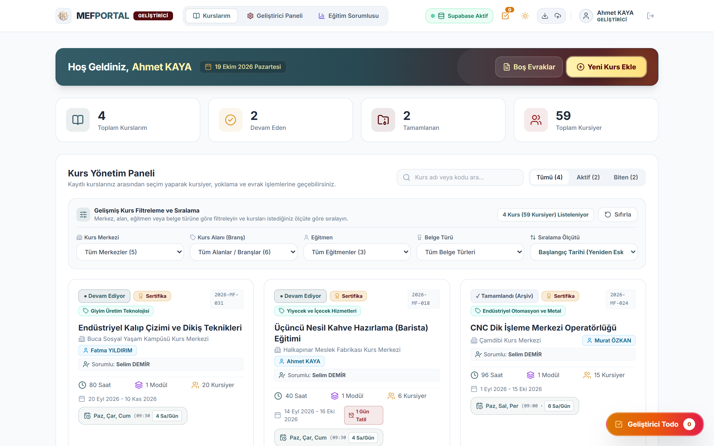
Çok merkezli mesleki eğitim operasyonlarında manuel dosya, Excel ve Word şablonlarıyla yürütülen süreçlerin yarattığı iş yükü ve hata risklerinin ortadan kaldırılması.
Her kullanıcı yalnızca kendi görev alanına giren ekranlara erişir; tüm kişisel veriler 6698 sayılı KVKK standartlarında korunur.
Eğitmen, Zümre Başkanı, Eğitim Sorumlusu ve Sistem Yöneticisi (Geliştirici / Birim Amiri) rolleriyle net görev ayrımı.
T.C. Kimlik numaraları ekranda otomatik maskelenir (10*******46), resmi 11 hane algoritmasıyla doğrulanır ve taahhütname onayı ile kayıt altına alınır.
Giriş ekranından itibaren telefon ekranlarına özel önceliklendirilmiş (Mobile-First) arayüz ve hızlı erişim mimarisi.
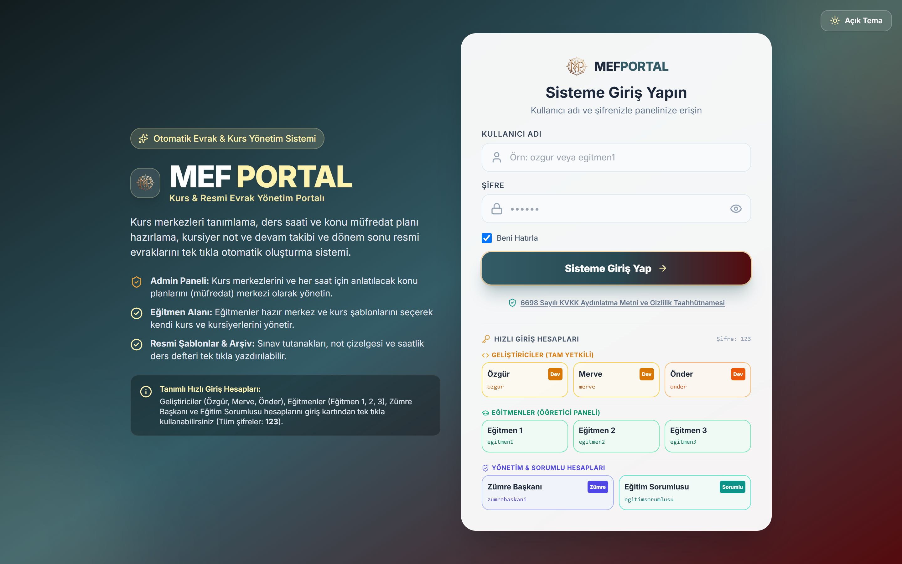
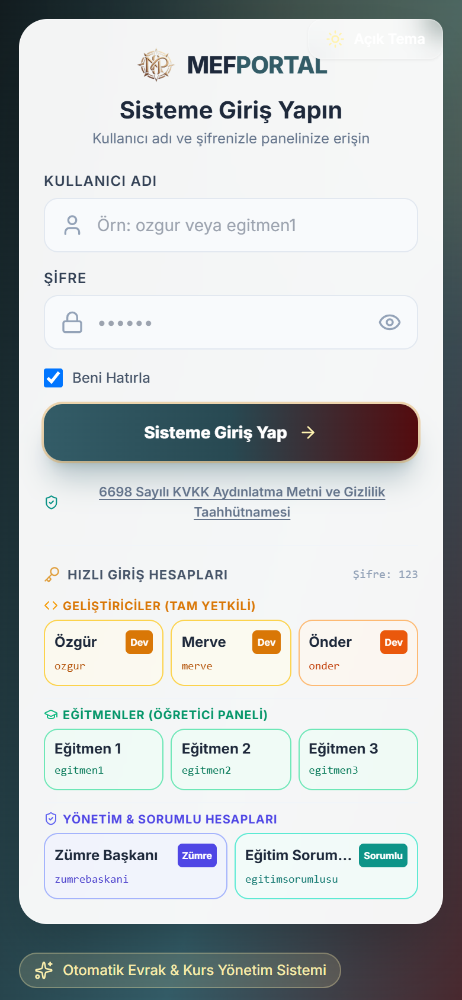
Meslek Fabrikası bünyesindeki tüm kurs merkezleri, branşlar ve saatlik ders müfredatları merkezi olarak tanımlanır ve standartlaştırılır.
Halkapınar, Çamdibi, Buca, Karabağlar, Bayraklı gibi tüm merkezler ve atölyeler sisteme tanımlanır.
Zümre başkanları ve yöneticiler tarafından hazırlanan saatlik ders planları şablon havuzuna eklenir; eğitmenler kurs açarken müfredatı tek tıkla yükler.
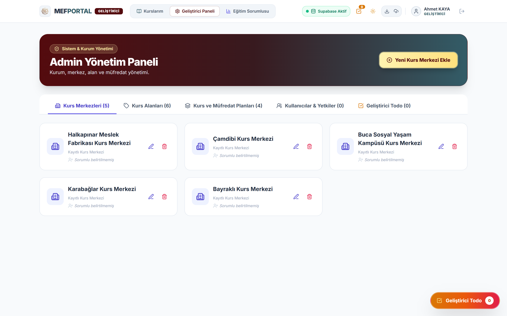
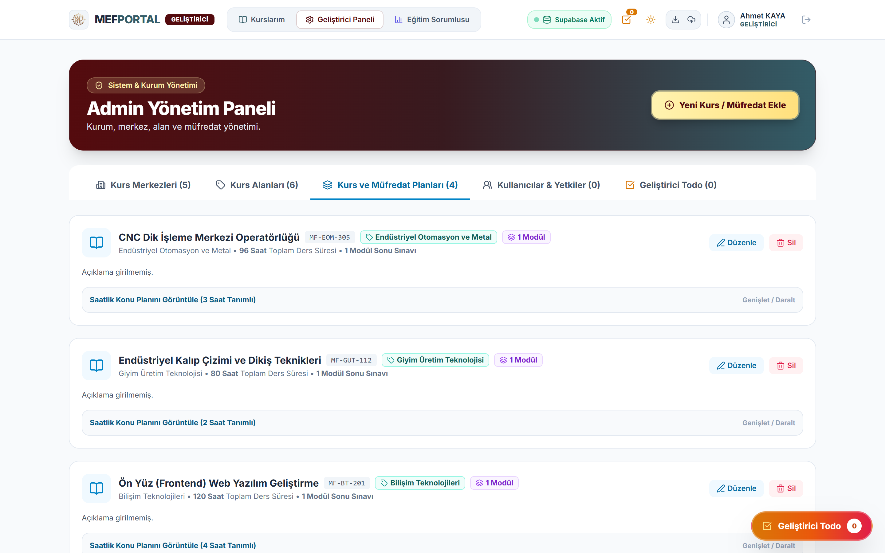
Eğitmenler aktif ve tamamlanan kurslarını, kursiyer sayılarını, ders günlerini ve resmi tatil bilgilerini tek bakışta yönetir.
Eğitmen kendi branşına ait hazır şablonu seçtiğinde toplam saat, modüller ve saatlik konular otomatik olarak kursa aktarılır.
Merkez, branş, eğitmen, belge türü ve başlangıç tarihine göre anlık filtreleme.
İhtiyaç halinde sahada kullanılmak üzere boş resmi tutanak ve çizelgelerin tek tıkla yazdırılması.
Mükerrer butonlardan arındırılmış, birincil aksiyonların ("Yeni Kurs Ekle") öne çıkarıldığı kullanıcı dostu arayüz.
Kursun haftalık ders günleri ve günlük ders saatine göre tüm eğitim takvimi saniyeler içinde otomatik oluşturulur.
Resmi tatiller, bakım günleri veya eğitmen izinleri işaretlendiğinde o günler ders saatinden sayılmaz ve kurs bitiş tarihi otomatik ötelenir.
Her ders saati için anlatılan konular tek tek veya Word/Excel listesinden toplu yapıştırılarak düzenlenebilir.
Burada tanımlanan her ders saati ve konu, kurs sonunda üretilen "Resmi Ders Defteri" evrakına tarih ve saatleriyle otomatik basılır.
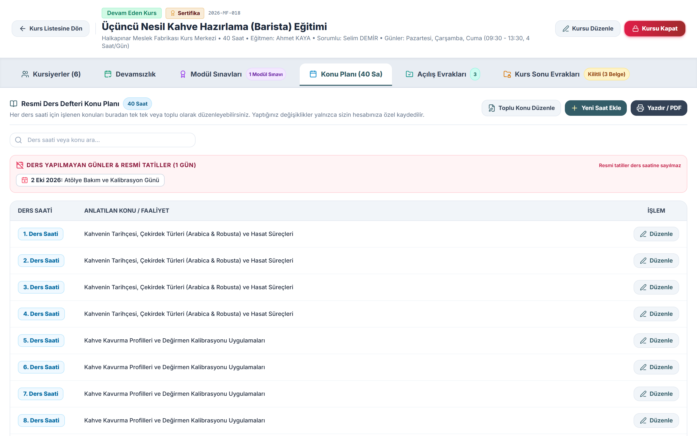
Kursiyer listeleri Excel veya e-Yaygın formatından saniyeler içinde aktarılır; tüm isimler resmi evrak standardına otomatik dönüştürülür.
Onlarca kursiyeri tek tek yazmak yerine Excel tablosundan veya kopyala-yapıştır ile saniyeler içinde kursa ekleme.
Kullanıcı nasıl yazarsa yazsın kursiyer adları otomatik olarak "Ad SOYAD" (Örn: Ayşe Gül ŞAHİN) formatına çevrilir; tüm resmi evraklar kusursuz görünür.
Her kursiyerin toplam devamsızlık saati, modül sınav ortalaması ve nihai kurs sonu kararı ("Başarılı", "Devamsız", "Hiç Gelmedi") tabloda canlı izlenir.
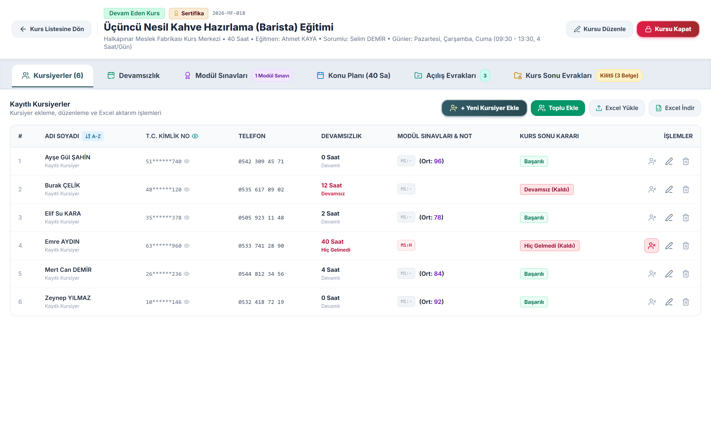
MEB yönetmeliğindeki 1/5 devamsızlık sınırı sistem tarafından anlık hesaplanır; sınırı aşan kursiyerler otomatik olarak "Devamsız" statüsüne alınır.
Örneğin 40 saatlik bir kursta 8 saatlik (1/5) yasal devamsızlık sınırı otomatik belirlenir; kalan hak saat bazında gösterilir.
Tek tıkla o günkü tüm kursiyerler tam katılımlı (0 saat devamsız) olarak işaretlenir; yalnızca gelmeyenler seçilir.
Kursu yarıda bırakan kursiyerin kalan tüm günleri veya kursa hiç başlamayan kursiyerin tüm kurs süresi tek tıkla resmi tutanaklara uygun işlenir.
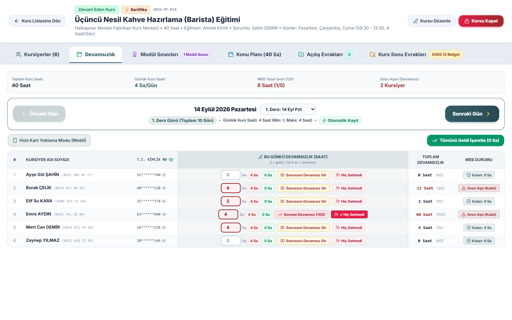
Eğitmenler atölyede bilgisayar açmaya gerek duymadan, cep telefonlarından "Hızlı Kart Yoklama Modu" ile saniyeler içinde yoklama alır.
Sistem cep telefonu ekranından girildiğini otomatik algılar ve yatay kaydırma gerektiren tablo yerine dokunmatik "Yoklama Kartları"nı açar.
Her kursiyer kartında bulunan geniş "✓ Geldi (0 Sa)" ve "✕ Yok (4 Sa)" butonları ile hatasız ve hızlı veri girişi.
Ders günleri arasında ileri/geri oklarla veya açılır listeden tek dokunuşla geçiş ve anlık bulut kaydı.
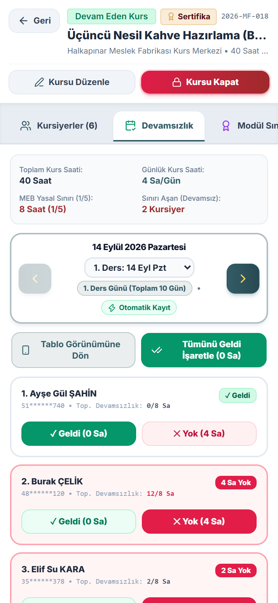
Modül sınav tarihleri ders planına göre otomatik belirlenir; devamsızlıktan kalan kursiyerlere sehven not girilmesi sistem tarafından engellenir.
Her modülün sınav tarihi ve saati, müfredat planındaki son ders saatlerine göre otomatik hesaplanır.
Devamsızlık sınırını aşan veya kursa hiç gelmeyen kursiyerlerin sınav kutucukları otomatik kilitlenir; idari hata yapılması önlenir.
Enter veya yön tuşlarıyla alt satıra hızlı geçiş; 50 ve üzeri puan alanların otomatik "Başarılı" olarak tescillenmesi.
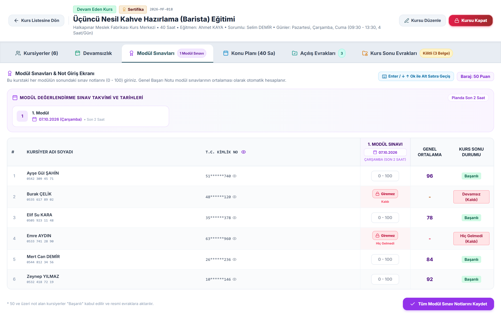
Saatler süren evrak hazırlama işlemi saniyelere iner; tüm belgeler imza blokları, mühür alanları ve resmi A4 mizanpajıyla yazdırmaya hazır üretilir.
Kurs Planı ve Müfredat Programı, Kursiyer Kayıt & Açılış Listesi ve Günlük İmza Sirküleri tek tıkla yazdırılır.
Kursiyer Karar Durumu Tutanağı, Resmi Yoklama Cetveli & Saatlik Ders Defteri ve Modül Değerlendirme Çizelgesi otomatik hazırlanır.
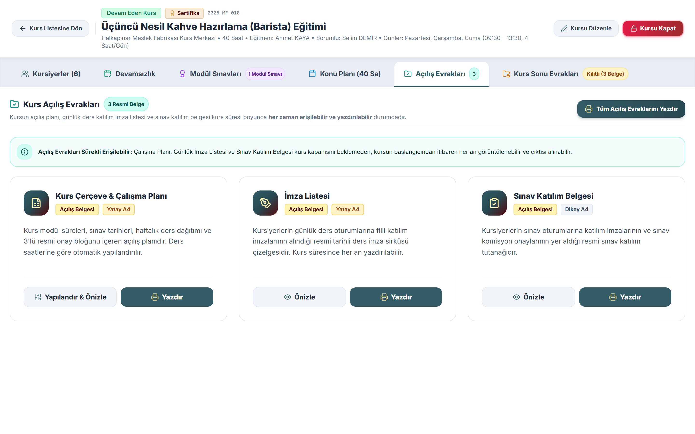
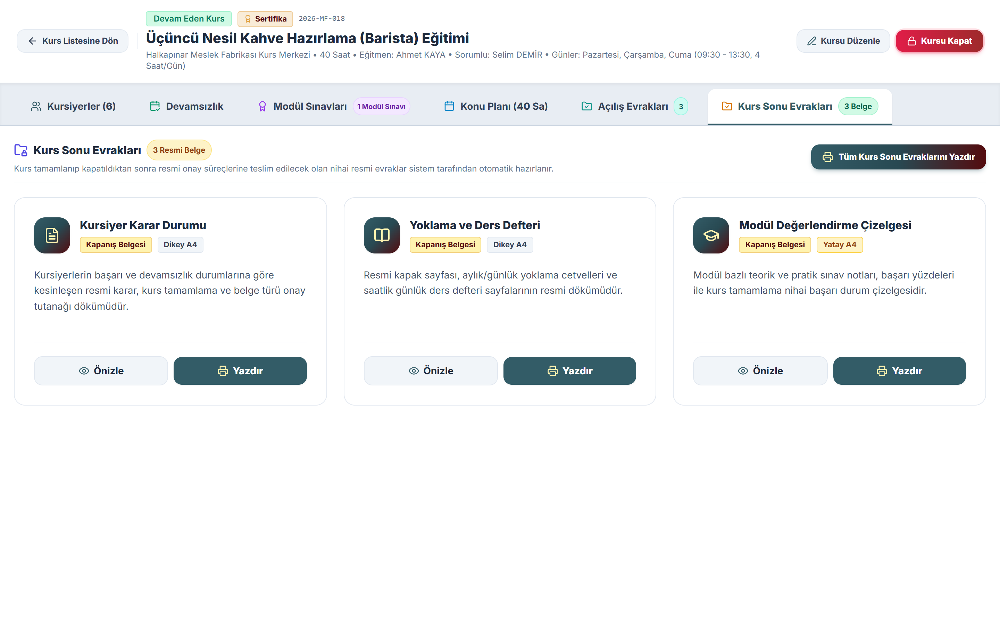
Eğitim sorumluları ve yöneticiler tüm merkezlerdeki kurs ve kursiyer hareketlerini canlı grafiklerle izler, evrakları uzaktan denetler.
Merkez, branş, ders, eğitmen, kurs durumu (Aktif/Biten) ve zaman periyoduna (Bu Ay, Son 3 Ay, Son 6 Ay, Bu Yıl) göre anlık analiz.
Kursiyer Zaman Grafiği (Kayıt/Başarı/Devamsız), Kurs Zaman Grafiği, Kurs Merkezleri Saat Dağılımı ve Eğitmen Performans Eğrisi.
Eğitim sorumlusu listedeki herhangi bir kursun içine girerek yoklama, sınav ve resmi evraklarını anında inceleyebilir ve yazdırabilir.
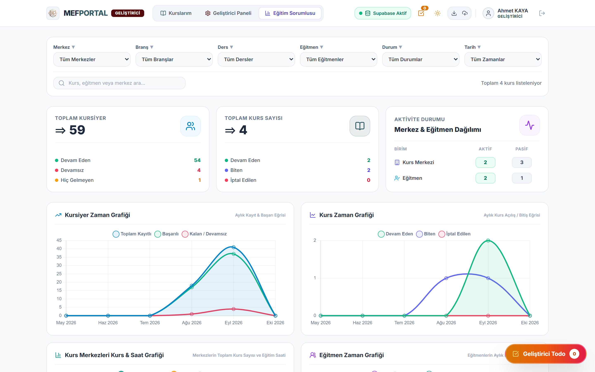
Esnek ve modern web mimarisi sayesinde sistem, Meslek Fabrikası'nın gelecekteki tüm dijital ihtiyaçlarına hızla entegre olabilecek yapıda tasarlanmıştır.
MEFPORTAL, Meslek Fabrikası'nın eğitim kalitesini ve kurumsal hafızasını güçlendiren, sıfır lisans maliyetli ve tamamen kurum ihtiyaçlarına göre özelleştirilebilir yerli bir çözümdür.
Eğitmenlerin ve sorumluların evrak hazırlama, kontrol ve arşivleme sürelerinde azalma.
Tüm kurs merkezlerinde aynı kalitede, hatasız ve tek tip resmi evrak üretimi.
Devamsızlık (1/5), resmi tatil, ders saati ve sınav barajı hesaplamalarında tam doğruluk.
Yöneticiler için tüm merkezlerin performansını anlık grafiklerle izleme imkanı.
Pilot bir kurs merkezinde veya tüm Meslek Fabrikası kurs merkezlerinde anında devreye alınabilir; kurum içi geri bildirimlerle yeni modüller hızla eklenebilir.